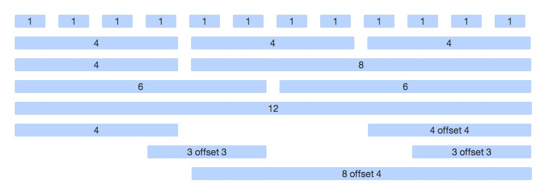

git clone git://github.com/javascriptu/workshop-1.1-src.gitcd workshop-1.1-src/npm installnode fileServer.jsA checklist of things you'll probably need to think about anyway
The one and only.
Feature detector. HTML5 supporter. Conditional loader.
IE class tags. Chrome frame. IE rendering engine tag.
Icons for use on iOS and Android
For remote request granting
Favicons are retrieved by browsers and used in bookmarks and the URL bar
Because we're not robots
Dictate how search engines can crawl our site
main.js vs script.jsmain.js is a RequireJS conventionscript.js)Client side compilation allows us to start using LESS as soon as we decide to.
Sass (and others) require pre-compilation to CSS before being useful.
CSS is extremely repetitive. LESS evens it out without adding much extra.
As long as you use something. Sass, and others, are excellent but...
Make the most out of Bootstrap by embracing LESS.
Aligned elements, Columns, and Grids.
Buttons, Information Icons, Labels, Notifications...

variables.lessvariables.lessThe Asynchronous Module Definition (AMD) API specifies a mechanism for defining modules such that the module and its dependencies can be asynchronously loaded.
define()The specification defines a single function "define" that is available as a free variable or a global variable.
define(id?, dependencies?, factory);Using an ID is not recommended unless necessary.
define(dependencies?, factory);Large applications can easily become very unwieldy with manually managed dependencies.
Easily define and use separate modules.
Extends the module pattern you already know (and love).
require.jsmain.jsrequire.configrequire()define()fiveCount.jsr.jsnode r.js main.jsNew code written adhering to AMD is beautiful and made of cotton candy.
A lot of existing modules don't expect to be loaded asynchronously.
Most other code expects access to existing global variables, or needs to create their own.
Libraries that support AMD often still support non-AMD, global access for compatibility.
Write some code you know should probably produce a "4" or something similar.
Go to your browser, refresh, verify that you see a "4".
Success? - Move on. Failure? Go back to 1.
You have to manually test every time.
You really can't test anything except what you are currently working on at any given time.
Every second you manually test is a second gone. You can't reuse your efforts.
Your a programmer. Have some respect.
Write a test to verify some code produces a "4".
Write some code you know should probably produce a "4".
Run your test.
Success? - Move on. Failure? Go back to 2.
Ideally, every line of code can eventually be tested automatically.
Other developers can run your tests to determine if they are breaking anything.
You start using your code well before it is producing the final product.
This will expose bugs earlier, allow you to question design choices earlier, and keeps your logic in testable chunks.
A spec is a function that runs any number of tests.
A test suite comprises of any number of specs, along with setup/teardown methods.
With beforeEach and afterEach, you can set up a fresh environment before every spec.
The individual tests that verify your code is working.
expect(allDogs).toGoToHeaven();Unit tests, RequireJS, LESS, and the rest are all useful for just about anything you can think of.
We will add to our toolkit, but most other libraries will depend on the situation.
Our base, though, can be reused over and over.
Get it running locally.
If you haven't already, checkout the workshop source and see how we incorporate each piece, step by step.
Look into LESS, jQuery, and Bootstrap. Play with using RequireJS. Write some tests.